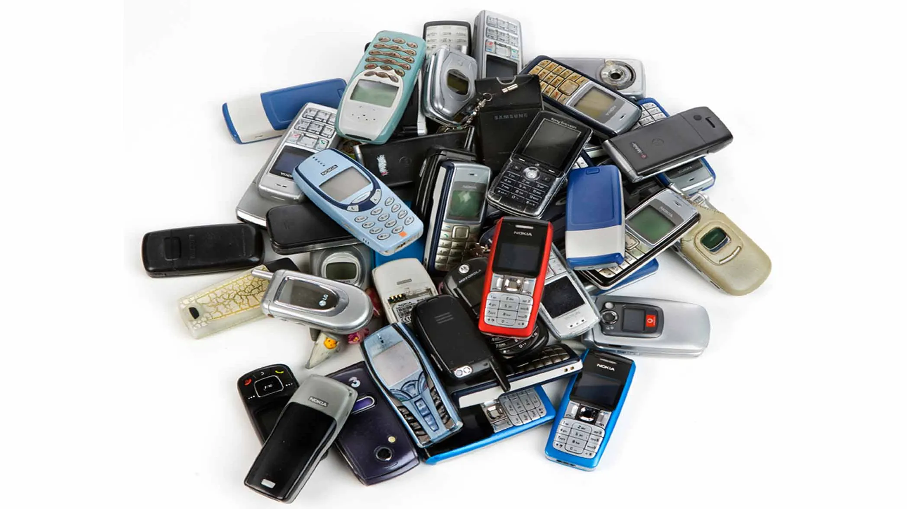
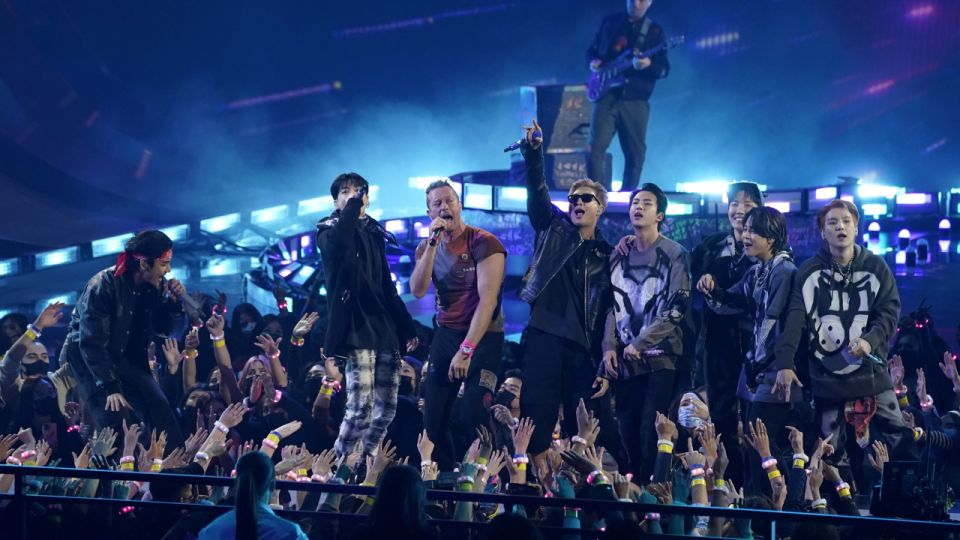

Year 2000

Melodramatic Media: Telenovelas like Pangako Sa 'Yo created intense emotional engagement in viewers.

Image 2 description for the year 2000.

Image 3 description for the year 2000.

Image 4 description for the year 2000.

Image 5 description for the year 2000.

Mobile Revolution: SMS texting culture boomed, turning the Philippines into the "texting capital of the world." (Uy-Tioco)

Image 7 description for the year 2000.
Year 2001

Image 1 description for the year 2001.